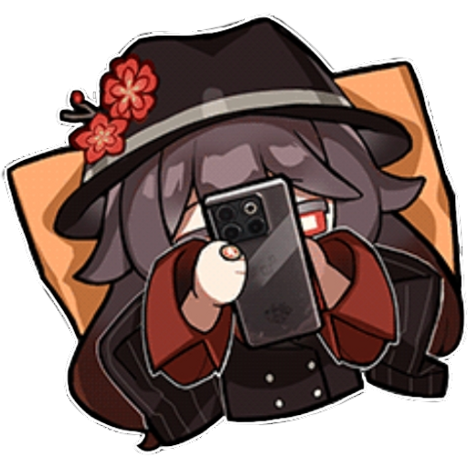
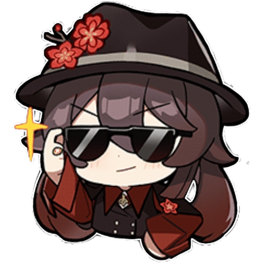
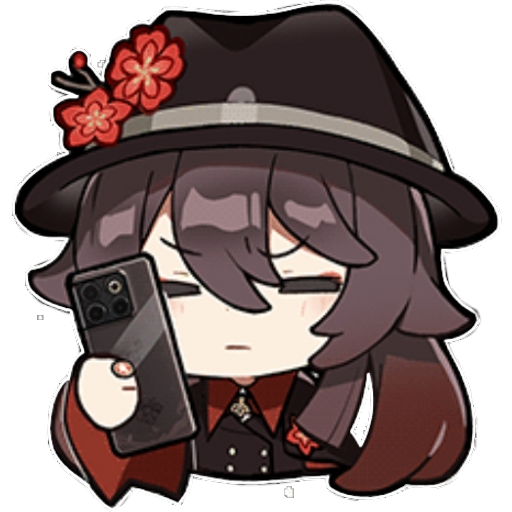

Story and Telling
The game is set in the fantasy world of Teyvat, which is home to seven distinct nations, each associated with a different element and ruled by a god known as an Archon. Players take on the role of a character known as “The Traveler,” who is searching for their lost sibling. Alongside their companion Paimon, players explore the vast landscapes of Teyvat, meet a diverse cast of characters, and become entangled in the complex politics and conflicts of its nations
Gameplay
Genshin Impact offers a mix of exploration, combat, and character progression. Players can control a party of up to four characters, each with unique abilities and elemental affinities. The game’s combat system emphasizes switching between characters to chain elemental reactions for powerful combos. Exploration is a significant aspect of the game, with a world filled with puzzles, resources, and hidden secrets to discover.
Development and Reception
The development of Genshin Impact began in 2017, drawing inspiration from various sources, including “The Legend of Zelda: Breath of the Wild,” anime, Gnosticism, and a range of cultures and world mythologies. The game has been praised for its engaging combat mechanics and immersive open world, though it has faced criticism for its endgame content and reliance on gacha mechanics for monetization.
Updates and Community
Genshin Impact is continuously updated with new content, characters, and events. The game has a vibrant community with forums and wikis where players share information, strategies, and experiences. As of the latest updates, the game has introduced new areas, story quests, characters, and in-game events. The game has achieved significant commercial success, grossing nearly $3.8 billion by the end of 2022 and holding the record for the highest ever first-year launch revenue for any video game. It’s a testament to the game’s popularity and the developer’s commitment to keeping the game fresh and engaging for its players. For anyone interested in a rich RPG experience with a blend of storytelling, exploration, and combat, Genshin Impact offers a vast magical world to dive into. Whether you’re a seasoned gamer or new to the genre, there’s something in Teyvat for everyone to enjoy.